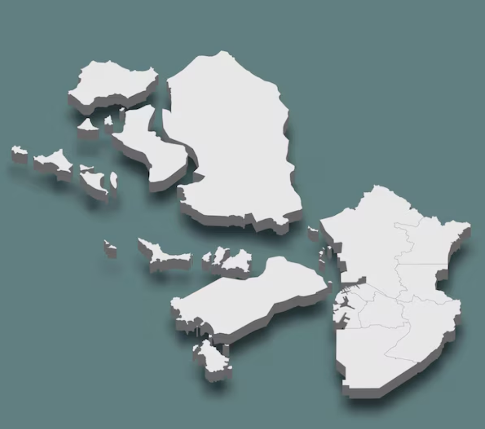

Incheon Local Music Guide
SUPERSONIC STUDIO
Incheon Local Music Guide.
인천에서 음악을 즐길 수 있는 주요 장소들과, 그곳에서 만들어지는 음악/이야기를 담았습니다. 아래에서 지도와 인터뷰, 그리고 SUPERSONIC STUDIO의 Editor’s Picks를 확인할 수 있어요.
Map.
전체 인천 로컬 뮤직 스팟(40+) + 큐레이션 지도 정보까지 QR로 연결됩니다.

Interviews.
Zine에는 축약본이 수록되며, 인터뷰 전문은 아래에서 확인하실 수 있어요.


Editor’s Picks.
슈퍼소닉 스튜디오가 직접 큐레이션한 18개의 인천 음악 스팟에 대한 설명을 확인하세요.
© SUPERSONIC STUDIO